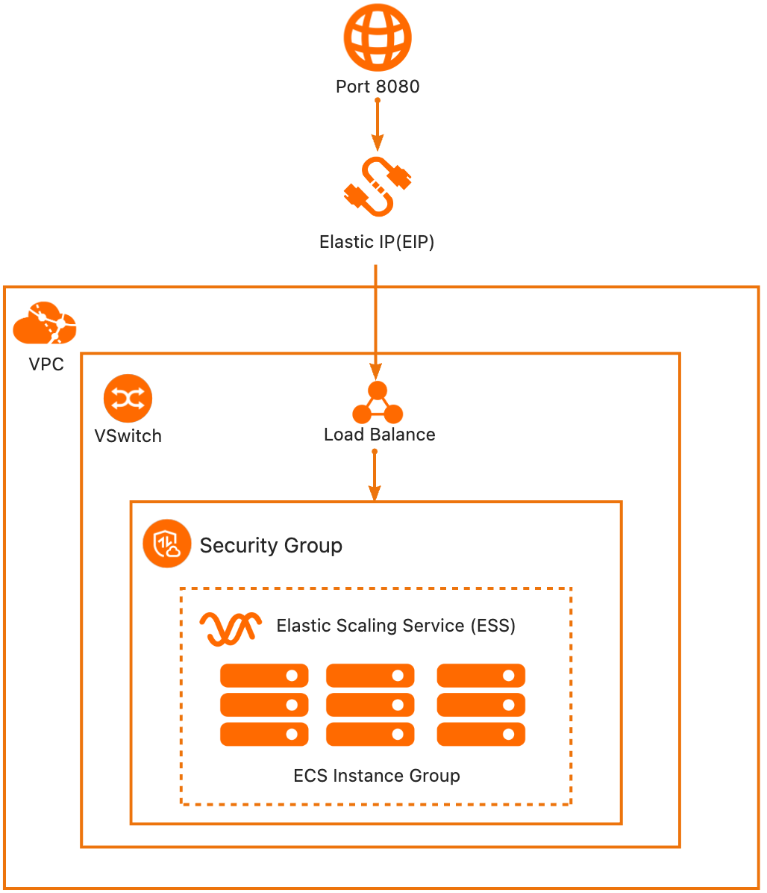
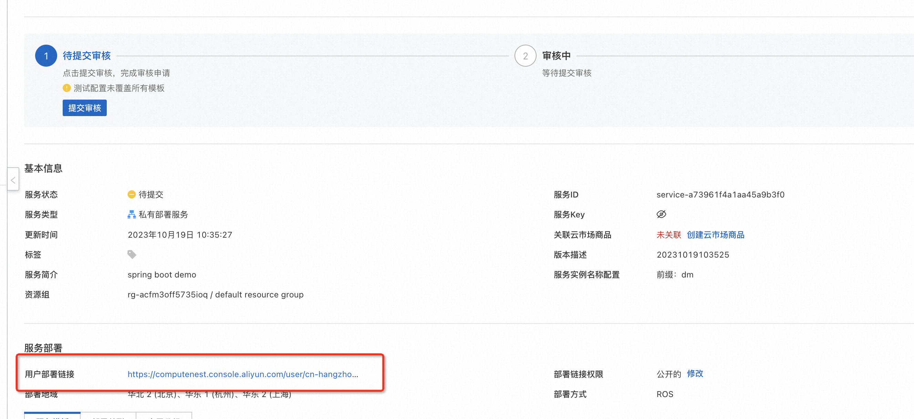
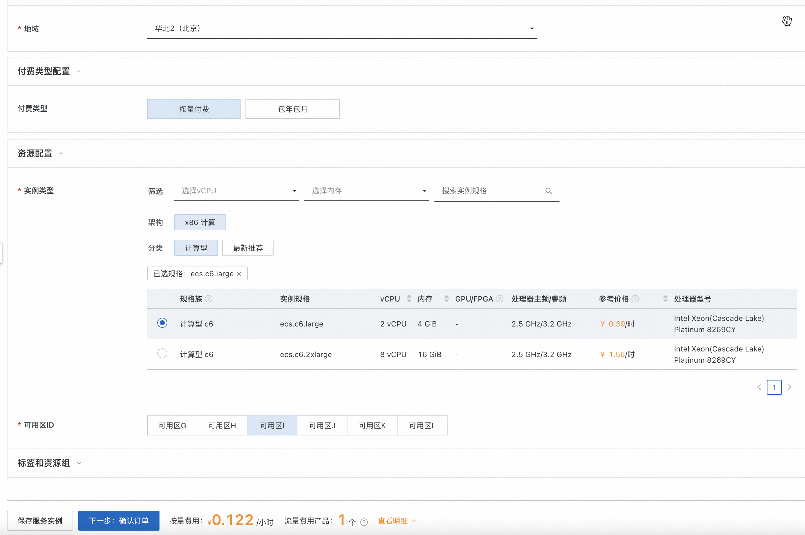
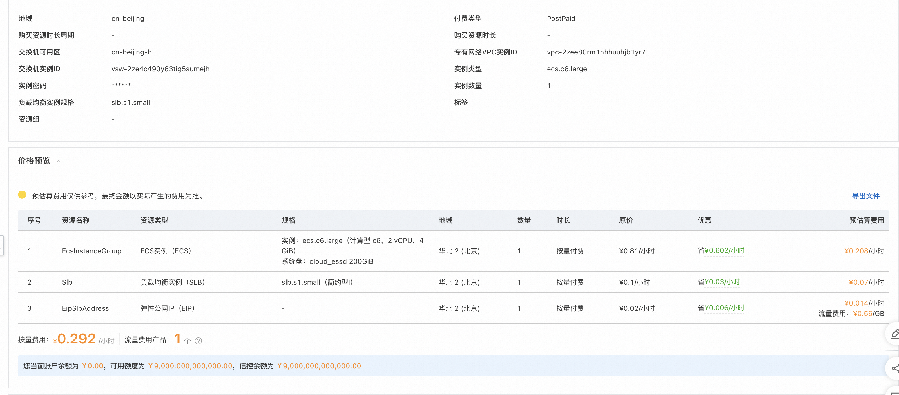
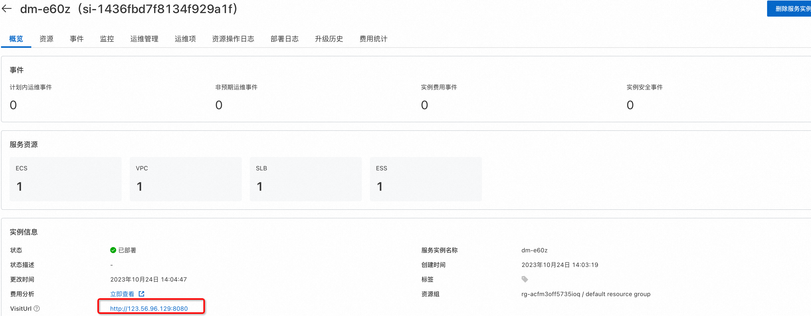
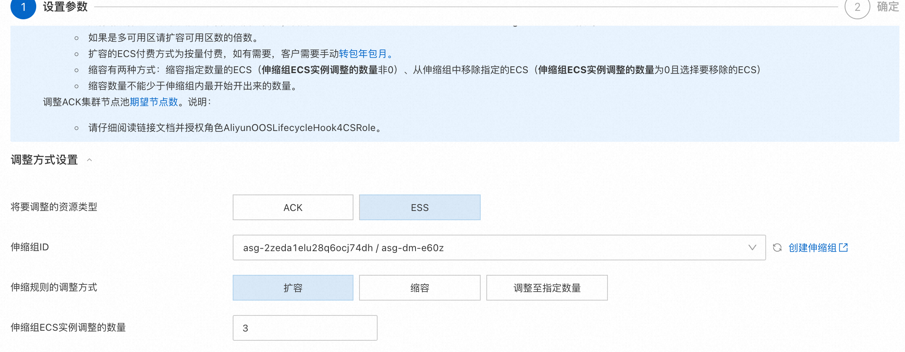
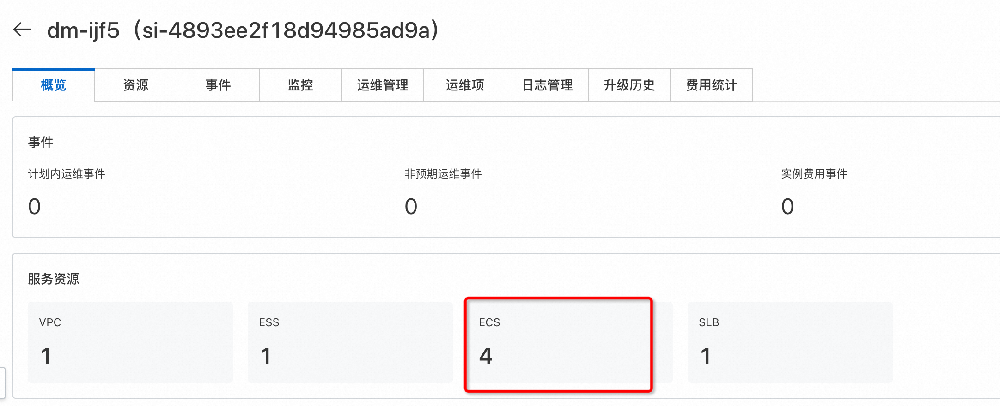

服务模版说明文档
服务说明
本文介绍基SpringBoot+软件包的ecs集群版服务快速上手流程，本示例对应的Git仓库地址：springboot-scaling-ecs-demo。
本示例会自动的构建计算巢服务，具体的服务构建流程为： 1. 上传文件并构建计算巢文件部署物 2. 创建计算巢服务并关联文件部署物
创建过程大约持续1分钟，当服务变成待提交后构建成功。
服务架构
本部署架构为集群ecs部署，通过eip 8080端口访问，配备负载均衡和弹性伸缩组，具体如图所示:

服务构建计费说明
测试本服务构建无需任何费用，创建服务实例涉及的费用参考服务实例计费说明。
RAM账号所需权限
本服务需要对ECS、VPC等资源进行访问和创建操作，若您使用RAM用户创建服务实例，需要在创建服务实例前，对使用的RAM用户的账号添加相应资源的权限。添加RAM权限的详细操作，请参见为RAM用户授权。所需权限如下表所示：
| 权限策略名称 | 备注 |
|---|---|
| AliyunECSFullAccess | 管理云服务器服务（ECS）的权限 |
| AliyunVPCFullAccess | 管理专有网络（VPC）的权限 |
| AliyunESSFullAccess | 管理弹性伸缩 (ESS) 的权限 |
| AliyunSLBFullAccess | 管理负载均衡 (SLB) 的权限 |
| AliyunROSFullAccess | 管理资源编排服务（ROS）的权限 |
| AliyunComputeNestUserFullAccess | 管理计算巢服务（ComputeNest）的用户侧权限 |
| AliyunComputeNestSupplierFullAccess | 管理计算巢服务（ComputeNest）的服务商侧权限 |
服务实例计费说明
测试本服务在计算巢上的费用主要涉及：
- 所选vCPU与内存规格
- 系统盘类型及容量
- 负载均衡配置
- EIP费用
计费方式包括：
- 按量付费（小时）
- 包年包月
目前提供如下实例类型：
| 规格族 | vCPU与内存 | 系统盘 | 公网带宽 |
|---|---|---|---|
| ecs.c6.large | 内存型c6，2vCPU 4GiB | ESSD云盘 200GiB PL0 | 固定带宽1Mbps |
| ecs.c6.2large | 内存型c6，4vCPU 8GiB | ESSD云盘 200GiB PL0 | 固定带宽1Mbps |
预估费用在创建实例时可实时看到。
服务实例部署流程
部署参数说明
| 参数组 | 参数项 | 说明 |
|---|---|---|
| 服务实例 | 服务实例名称 | 长度不超过64个字符，必须以英文字母开头，可包含数字、英文字母、短划线（-）和下划线（_）。 |
| 地域 | 服务实例部署的地域。 | |
| 付费类型 | 资源的计费类型：按量付费和包年包月。 | |
| ECS实例配置 | 实例类型 | ECS实例规格配置。 |
| 实例密码 | 长度8-30，必须包含三项（大写字母、小写字母、数字、 ()`~!@#$%^&*-+=|{}[]:;'<>,.?/ 中的特殊符号）。 | |
| SLB配置 ｜ 实例规格 ｜ SLB实例规格配置 | ||
| 网络配置 | 可用区 | ECS实例所在可用区。 |
部署步骤
- 部署链接

- 单击部署链接，进入服务实例部署界面，根据界面提示，填写参数完成部署。

- 参数填写完成后可以看到对应询价明细，确认参数后点击下一步：确认订单。

- 确认订单完成后同意服务协议并点击立即创建，进入部署阶段。
- 等待部署完成后就可以开始使用服务，进入服务实例详情点击visitUrl。

- 部署结果
- 弹性扩缩容

等待结束执行后可以看到资源中新增了3台ecs，完成了扩缩容。
服务详细说明
基础服务说明请参考SpringBoot软件包部署单机版，本文在此基础上新增了slb和ess的配置。
- slb给ecs配置负载均衡并绑定对应的eip。
Slb:
Type: ALIYUN::SLB::LoadBalancer
Properties:
VpcId:
Ref: VpcId
VSwitchId:
Ref: VSwitchId
LoadBalancerName:
Fn::Join:
- '-'
- - 'slb'
- Ref: ALIYUN::StackName
PayType:
Ref: PayType
PricingCycle:
Ref: PayPeriodUnit
Duration:
Ref: PayPeriod
AddressType: intranet
LoadBalancerSpec:
Ref: LoadBalancerSpec
AutoPay: true
EipSlbAddress:
Type: ALIYUN::VPC::EIP
Properties:
Name:
Ref: ALIYUN::StackName
InternetChargeType: PayByTraffic
Bandwidth: 5
EipSlbAddressAssociation:
Type: ALIYUN::VPC::EIPAssociation
Properties:
InstanceId:
Ref: Slb
AllocationId:
Ref: EipSlbAddress
SlbBackendServerAttachment:
DependsOn:
- EcsInstanceGroup
Type: ALIYUN::SLB::BackendServerAttachment
Properties:
BackendServerList:
Fn::GetAtt:
- EcsInstanceGroup
- InstanceIds
LoadBalancerId:
Ref: Slb
BackendServerWeightList:
- 100
- 100
SlbListener:
DependsOn:
- Slb
Type: ALIYUN::SLB::Listener
Properties:
Persistence:
CookieTimeout: 60
StickySession: 'on'
PersistenceTimeout: 180
XForwardedFor: 'off'
StickySessionType: insert
ListenerPort: 8080
Bandwidth: -1
HealthCheck:
HttpCode: http_2xx,http_3xx,http_4xx,http_5xx
HealthCheckType: tcp
UnhealthyThreshold: 3
Timeout: 5
HealthyThreshold: 3
Port: 8080
URI: /
Interval: 2
LoadBalancerId:
Ref: Slb
BackendServerPort: 8080
Protocol: tcp
- ess配置增加弹性伸缩能力可以随时扩缩容。
EssInstanceScalingGroupEnable:
Type: 'ALIYUN::ESS::ScalingGroupEnable'
Properties:
ScalingRuleArisExecuteVersion: '1'
ScalingConfigurationId:
Ref: EcsInstanceScalingConfiguration
InstanceIds:
'Fn::GetAtt':
- EcsInstanceGroup
- InstanceIds
ScalingGroupId:
Ref: EssInstanceScalingGroup
DependsOn:
- EcsInstanceScalingConfiguration
- EssInstanceScalingGroup
EcsInstanceScalingConfiguration:
Type: 'ALIYUN::ESS::ScalingConfiguration'
Properties:
# 网络配置
SecurityGroupId:
Ref: EcsSecurityGroup
# 伸缩组
ScalingGroupId:
Ref: EssInstanceScalingGroup
ScalingConfigurationName:
Fn::Join:
- '-'
- - 'sc'
- Ref: ALIYUN::StackName
# 实例类型
InstanceType:
Ref: EcsInstanceType
# 磁盘配置
SystemDiskCategory: cloud_essd
SystemDiskSize: 200
ImageId: centos_7_8_x64_20G_alibase_20211130.vhd
InstanceName:
Fn::Join:
- '-'
- - Ref: ALIYUN::StackName
- '[1,4]'
UserData:
Fn::Sub:
- |
#!/bin/bash
yum install -y java
mkdir -p /home/admin/application
cd /home/admin/application
wget '{{ computenest::file::springboot }}' -O package.tgz
tar xvf package.tgz
/bin/bash deploy.sh start
- AccountId:
Ref: ALIYUN::TenantId
服务配置
服务交付
其他
© 2009-2022 Aliyun.com 版权所有